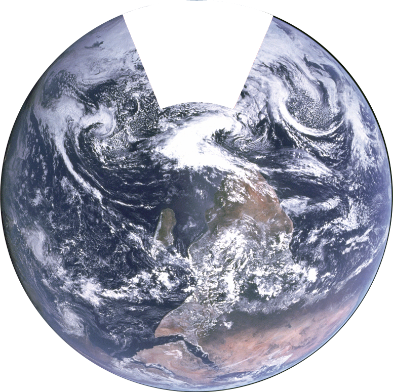

LOADING, PLEASE BE PATIENT. DON'T KILL YOURSELF. YOUR CONTENT WILL BE DELIVERED SHORTLY!
The year is 2113. These days, everything that can be digitized has been digitized. That “Internet of Things” we’ve been hearing so much about has been a reality for decades: every last device on Earth has been connected a vast information superhighway. Just keep watching to see how the old will fit in with the new in the city of Paris as it will appear in one century.
Eva’s journey takes her through the heart of the city, a very colorful place. Houses are no longer the boring two-tone cubes they are today. Ultra-thin monitors replace siding and shingles, allowing buildings to assume any number of hues and patterns. The shifting color scheme might confuse a human driver, but driving is an activity with which few humans bother in 2113. These days, cars are fully automated, and, like most of the city, they run on solar power generated by panels that have been programmed to follow the sun.
Now, Eva is in school where new information systems are used everywhere. Right now our student is computing a math problem on her interactive desk. Long gone are the days of paper and pencil; this desk is a touchscreen and allows Eva to use her fingers to solve the problems rather than a pencil. When teachers cannot attend school, they are able to teach the class without having to leave home. Through a holographic system, they are projected into the classroom as if they were really in the room. Similarly, each classroom is designed to have walls made of touch screen apparatus. One can easily solve math equations on a word program as well as do research on the huge interactive surface.
After school, Eva arrives at the town park and enters a field. There she goes up to the iSport, which will transform the field into anything from a basketball court to a swimming pool. If Eva wishes to play a sport, but does not have an opponent, she can configure the settings to allow holographic people to play against her. Eva’s going to ice skate today, so the field transforms into a skating rink and a pair of ice skates appear by the side of the machine.
Unfortunately, Eva doesn’t go to space today, but she could if she wanted to. Powerful quantum computers have made extremely complex physics simulations possible. Coupled with molecular 3D printers and some very talented engineers, this advance has made it possible to manufacture space elevators. In 2113, adventurous space tourists frequently visit fully autonomous space stations to gain a new perspective on our ever smaller blue marble.
Looking at the city from afar, it is plain to see that the world hardly resembles the place it used to be. Once a city of stone and torches, the Paris of the 22nd century is a metropolis of carbon fibers and holographic imagery. For all that has happened, though, at least one familiar landmark remains. Life probably isn’t perfect for Eva, but 2113 is certainly an exciting time to be living. Even if only because her ocular implants are set to project a pink overlay, tomorrow’s technology is giving Eva (and humanity) a chance to live la vie en rose.
